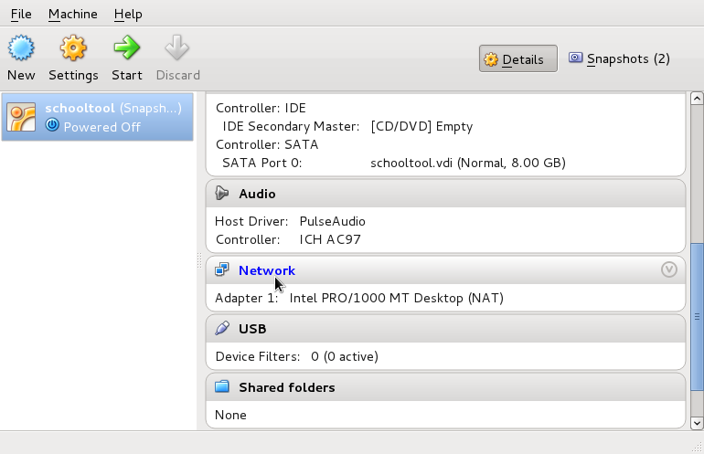
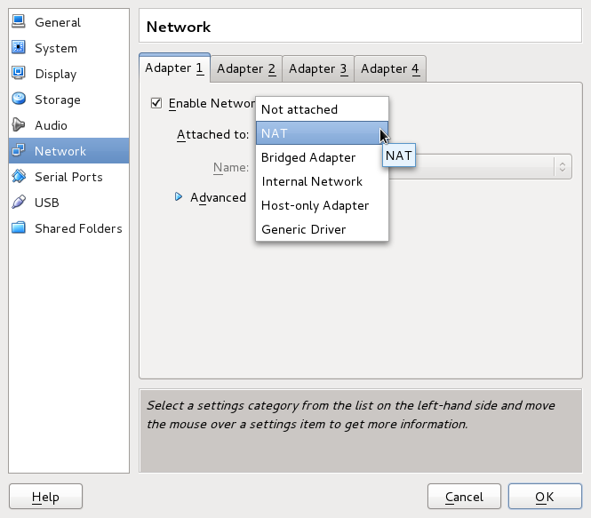
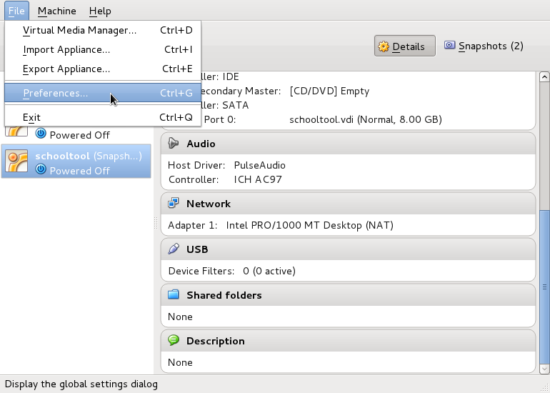
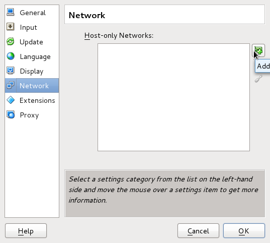
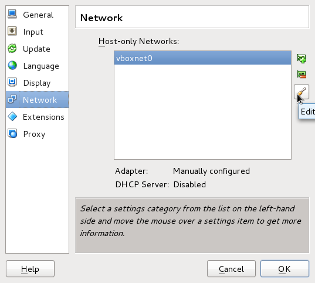
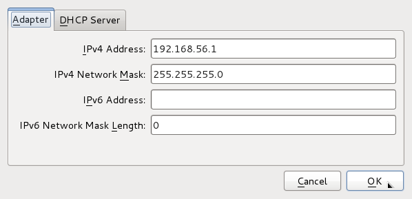
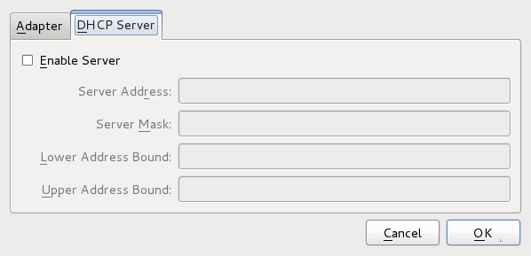
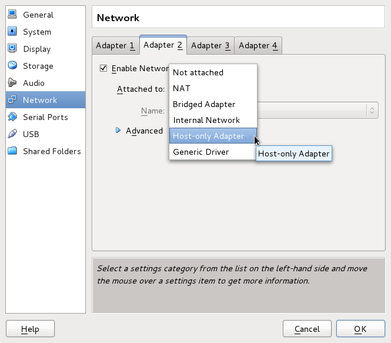
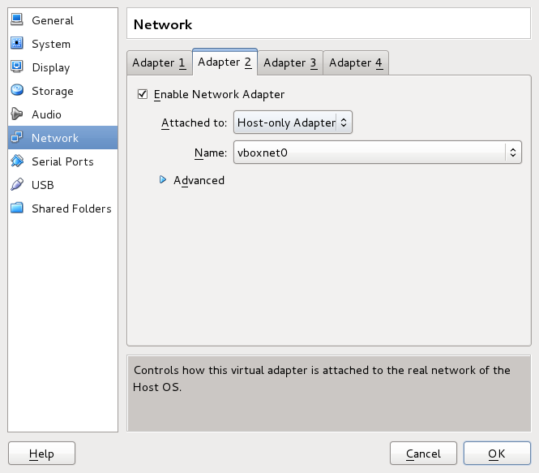
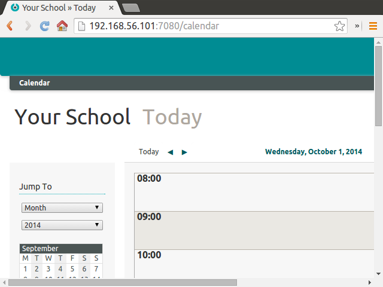

Testing SchoolTool with Virtual Servers¶
Using Virtual Servers¶
If you would like to test SchoolTool but do not want to install Ubuntu on a spare computer, or if you are an Ubuntu user who does not want to install the SchoolTool package and (many) dependencies on a production system, one solution is to create a virtual server running Ubuntu.
Using virtualization, we can install Ubuntu as a guest operating system (OS) on a host computer which may be running Windows, Mac OS X, Linux, or another OS – provided that the host machine has adequate processing power and RAM to allocate to the virtual SchoolTool guest machine.
There are many options available for running virtual servers. In this case, we will use VirtualBox, which runs on Windows, Linux, and Macintosh hosts and is freely available as open source software under the terms of the GNU General Public License (GPL) version 2.
Virtual servers can also be used in production. If you rent a cloud server from a host such as Linode, Rackspace or Digital Ocean, you are actually using a virtual server set up by the host service. You may also set up a virtual server to host SchoolTool in production from your own physical servers, but configuring and administering such a setup is outside the scope of this tutorial.
Installing VirtualBox¶
To begin, download the latest version of VirtualBox. Be sure to download the appropriate binary package for your host operating system. Run the installer and follow the prompts, then start VirtualBox.
Meanwhile, download the latest Ubuntu Server 14.04 LTS image. Note that if your host computer is 32 bit, you must also use the 32 bit version of Ubuntu server on the virtual server.
Install Ubuntu as a guest OS by following the instructions in the Ubuntu Community Documentation.
If your host computer has ample memory, you may want to give the guest machines 1 gigabyte of RAM or more. SchoolTool will run with less memory, but the performance may be much slower than in a setup with adequate memory.
You do not need to select anything during the Install Software step.
After you log into the VM on its terminal, the next step is Installing SchoolTool. Remember to configure the system for Accessing SchoolTool from Other Computers.
Network Adapter Settings¶
Each virtual machine can have up to four network adapters, which may be configured to attach to the host machine and external networks in a variety of ways.
The following instructions are based on this tutorial by Christopher Maier.
Accessing the Internet From the VM¶
A new virtual machine should be set up to use a virtual NAT by default. To confirm:
First, click on the “Network” section of the VirtualBox administrative interface for your SchoolTool VM.

Set “Adapter 1” to Network Address Translation (NAT).

This will allow you to access the Internet from within the virtual machine, so you can update your Ubuntu Server packages, and install SchoolTool along with all of its dependencies. But it won’t allow you to access SchoolTool’s web interface from a browser on the host, or allow multiple virtual machines to access each other.
Accessing the VM From the Host (and Other VMs)¶
In order to access the SchoolTool server securely from the host computer, you’ll need to create a second Host-Only Network adapter.
First, stop the server. Then select File -> Preferences…

… and select the “Network” settings category from the list on the left-hand side. (This is a global preference setting for all VirtualBox VMs, as opposed to the machine-specific network adapter configuration we used earlier.)
If you do not see vboxnet0 in the list of Host-Only Networks, click the green plus (+) icon to create a new one:

Select vboxnet0 and click the orange screwdriver icon to Edit its settings:

You should see a dialog like this:

Take note of the adapter’s IP address (192.168.56.1 here); that’s the
address at which your guests can access the host.

Leave the “Enable Server” box unchecked on the DHCP configuration panel to prevent your virtual machines from being assigned random IP addresses every time they restart. (We will be assigning static IP addresses instead.)
Return to the VM-specific network adapter configuration by clicking on the “Network” section of the administrative interface for your SchoolTool VM:
Select the “Adapter 2” tab, check Enable Network Adapter and select “Host-only Adapter” from the Attached to: drop-down list.

Make sure that “Adapter 2” is using the vboxnet0 Host-Only Network.

Static IP Configuration¶
To assign a static IP address to your SchoolTool VM, start and log in
to the Ubuntu guest and execute the ifconfig command:
sudo ifconfig eth1 192.168.56.101 netmask 255.255.255.0 up
This will configure the second network adapter (eth1) to use the static IP address
192.168.56.101 in the Host-Only Network subnet range.
You should now be able to access the SchoolTool running on the guest OS from a browser on the host computer:

If this doesn’t work, make sure you followed the instructions for Accessing SchoolTool from Other Computers.
To make this configuration persistent, even after rebooting the VM, edit the
/etc/network/interfaces file using vim (or your favorite text editor):
sudo vim /etc/network/interfaces
Add the following block of code:
# The host-only network interface
auto eth1
iface eth1 inet static
address 192.168.56.101
netmask 255.255.255.0
network 192.168.56.0
broadcast 192.168.56.255
Reboot the VM and use ifconfig to verify that eth1 is configured with the
desired IP address.
Multi-Site Configuration¶
A multi-site configuration, with a central server that aggregates data from multiple SchoolTool instances, is currently under development. The configuration described above will allow multiple SchoolTool instances to communicate with one another over the Host-Only Network – just assign a different static IP address to each virtual machine.
To expedite multi-site configuration, you may wish to use machine names rather
than IP addresses. Edit the /etc/hosts file on the host and each guest VM:
sudo vim /etc/hosts
and add lines like these:
192.168.56.101 schooltool1
192.168.56.102 schooltool2
If the host OS is Linux or
Mac OS X, the file will be /etc/hosts. If the host is Windows, the file will
be \Windows\System32\drivers\etc\hosts.
Now, you should be able to access SchoolTool at http://schooltool1:7080
instead of http://192.168.56.101:7080.